library(ggplot2)
p <- ggplot(mpg, aes(displ, hwy)) +
geom_point()
p + facet_wrap(~ class)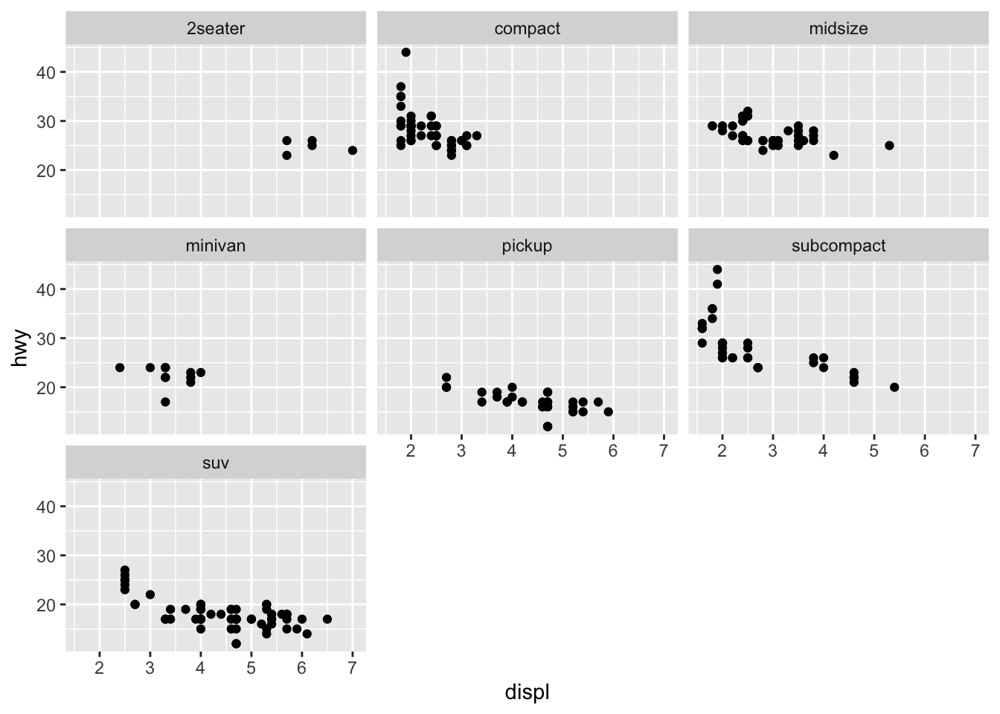
Faceting is a way to trade off some discrete aesthetic (e.g. hue) for position. It generates multiple subsets of the data (filtered by the values of some typically categorical variable) and shows them side by side. In this tutorial, the three kinds of facets available are explored as well as how they interact with position scales.
Faceting is a powerful tool for exploratory data analysis. It is not just a mapping to position, but also a data filtering operation: it generates as many different views of the dataset as levels of the variable(s) selected. Therefore, instead of being specified as another aesthetic, faceting is performed via three functions:
facet_null(): this is the default, meaning that no faceting is performed.
facet_wrap(): wraps a 1D ribbon of panels defined by a variable (or interaction between variables) into 2D, by default using the same number of rows and columns as much as possible.
facet_grid(): produces a matrix, a 2D grid of panels, with rows and columns respectively indexed by a different variable (or interaction between variables).
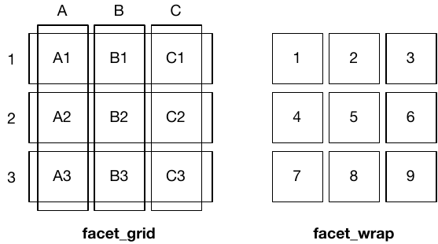
The differences between facet_wrap() and facet_grid() are depicted in the figure above. Essentially, on the left we have two factors: the first one indexes rows with levels 1, 2, 3; the second one indexes columns with levels A, B, C. On the other hand, on the right, a single factor has nine levels, and the set of panels are just arranged sequentially on a 3x3 grid.
facet_wrap() takes a long ribbon of panels and wraps it in a space-efficient manner, i.e. in a grid with a balanced number of rows and columns. In its simplest form, each panel depicts the data filtered by the factor level defined by a single variable.
library(ggplot2)
p <- ggplot(mpg, aes(displ, hwy)) +
geom_point()
p + facet_wrap(~ class)
Note the use of the formula notation, ~ class, and the strips on top labeled with the values of the variable class. Note also that all the facets share the same x/y scales (same limits, same guides…).
More variables can be added to such formula, and this is interpreted as the _interaction between the variables. Therefore, the facets depict all the possible combinations of the levels of those variables.
p + facet_wrap(~ class + cyl)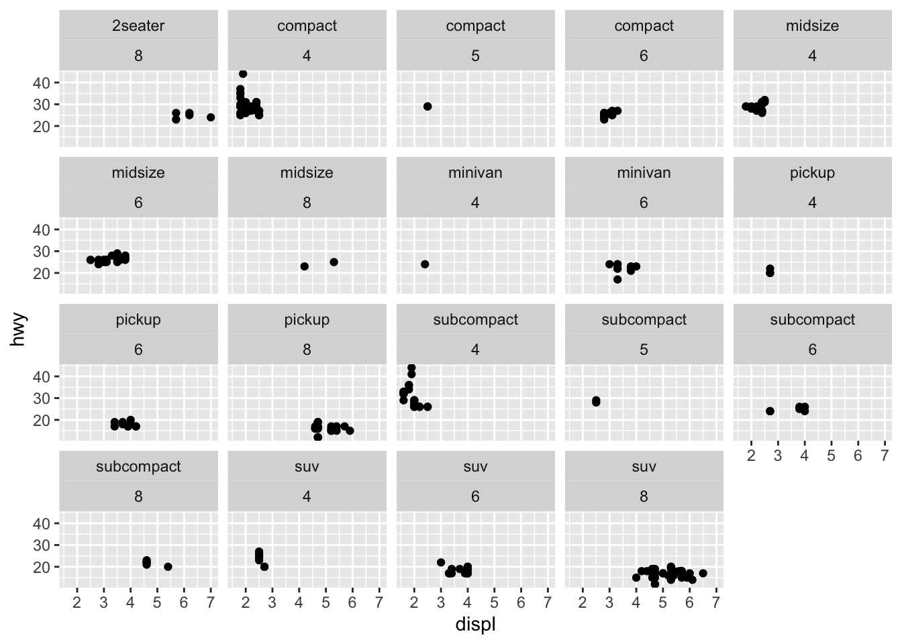
You can control the dimensions of this grid with ncol and nrow (you only need to set one), while as.table and dir define how the grid is filled. The position of the strip can be controlled with strip.position.
facet_grid() is a similar concept, but now the left and right side of the formula index the rows and columns respectively.
p + facet_grid(class ~ .) # by row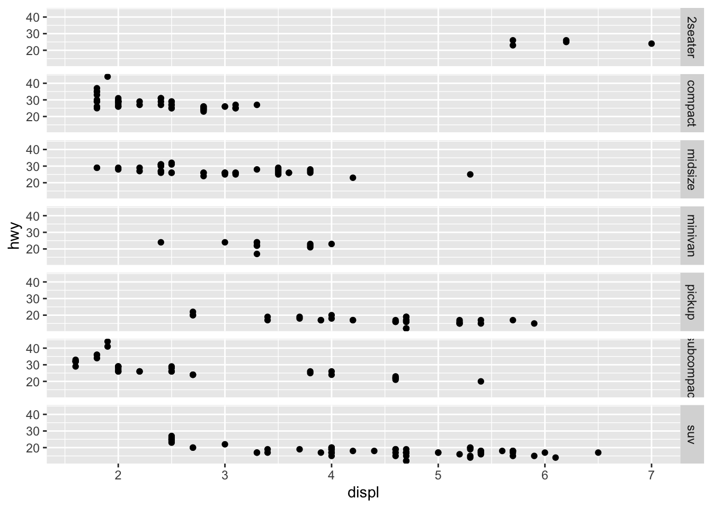
p + facet_grid(~ class) # by column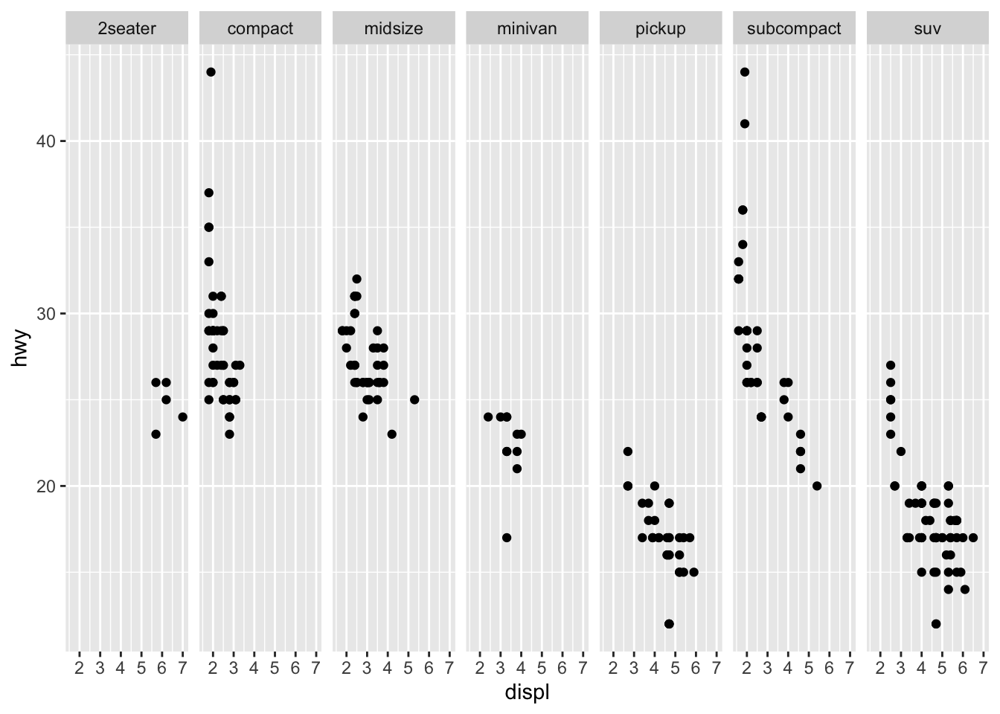
On the one hand, the number of rows and columns cannot be fixed anymore, because it depends on the number of levels that the associated variable contains. On the other hand, positioning by row facilitates the comparison of x values, because horizontal scales are all aligned (useful to compare distributions), while positioning by column facilitates the comparison of y values (useful to compare bar heights).
Moreover, comparing the levels of two factors is easier too:
p + facet_grid(cyl ~ class) # cyl by row, class by column
Checkpoint
cyl ~ class, how many panels are produced with facet_wrap() and facet_grid()? Why? Investigate how to produce the exact same panel layout of the facet_grid() invocation by modifying the arguments of the facet_wrap() function.p + facet_wrap(cyl ~ class)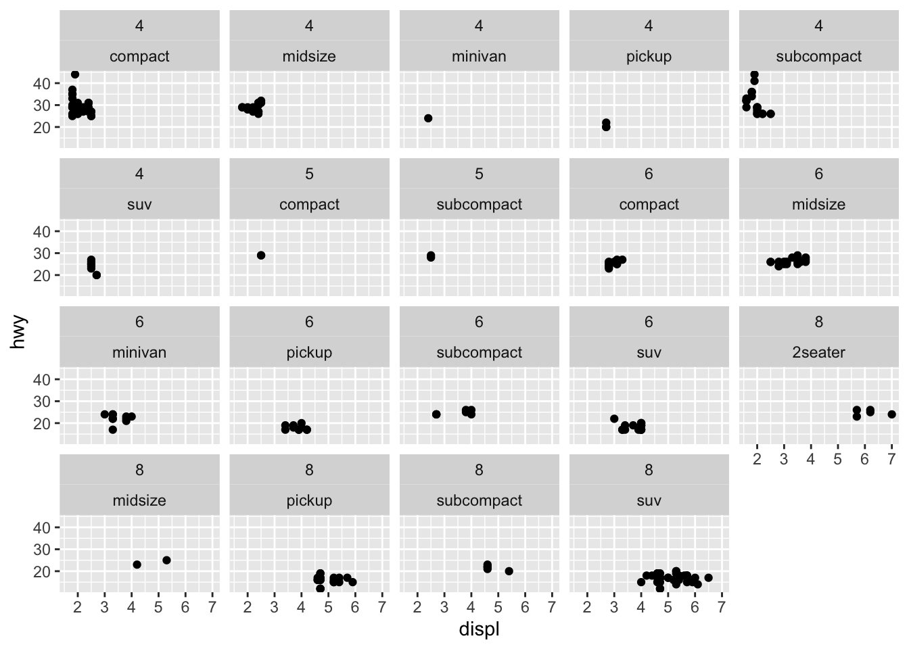
By default, drop is true in facet_wrap. Facet_grid takes one factor and takes all the levels in that factor as rows. Takes the other variable and takes all the levels as columns and fixes all the combinations of both. Facet_wrap removes empty panels.
p + facet_wrap(cyl ~ class, ncol=4, drop=FALSE)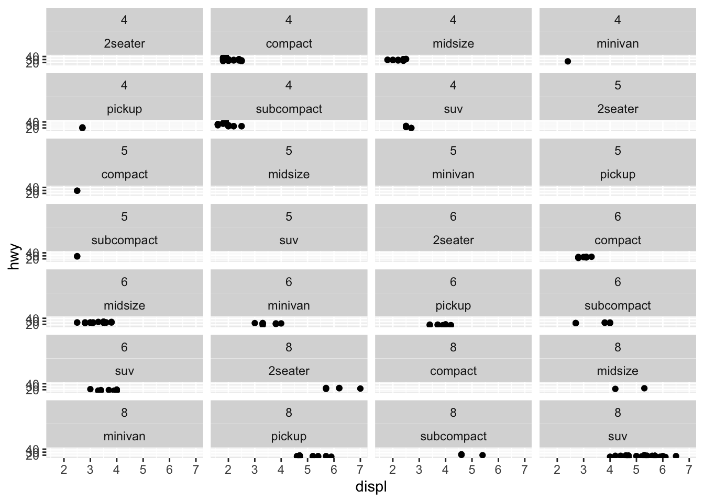
The above would produce the same as facet_grid while using facet_wrap. Iñaki uses facet_grid as he finds it is simpler to see and understand as well as cleaner.
facet_grid() has the same parameter you modified above. Why is it not taking any effect? When would it take effect?p + facet_grid(cyl ~ class, drop=TRUE)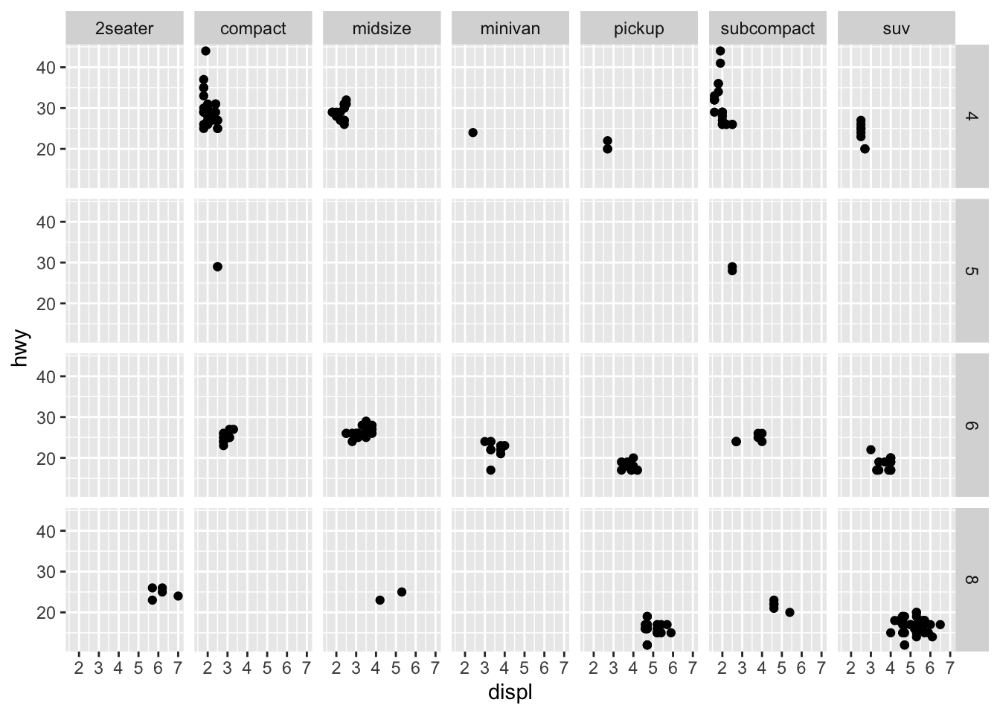
Facet_grid has ‘drop’ as well, but it doesn’t affect the data. It would only affect the whole column or row if it was empty.
margins argument for the facet_grid() function. Add color by cyl and by class alternatively to demonstrate the effect of the margins argument.p + facet_grid(class ~ cyl, margins = TRUE) 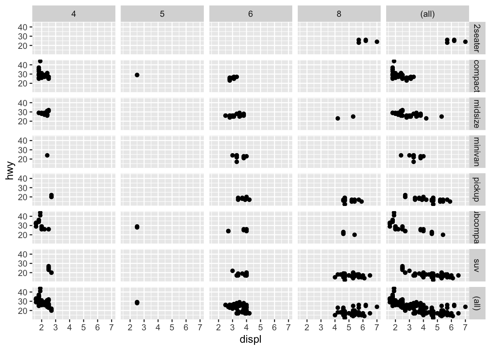
Margins adds in the ‘all’ columns and rows, which collects all the data in the column or all the data in the row.
By default, all panels share the same position scales, which is the best choice for most applications to avoid confusing the reader. However, sometimes it is useful to be able to zoom in the data, or, in other words, to drop some empty parts in order to increase the data-ink ratio. This is achieved via the scales argument:
scales = "fixed": x and y scales are fixed across all panels (default).
scales = "free_x": the x scale is free, and the y scale is fixed.
scales = "free_y": the y scale is free, and the x scale is fixed.
scales = "free": x and y scales vary across panels.
This is particularly interesting for comparing time series that may be measured in very different units.
economics_long# A tibble: 2,870 × 4
date variable value value01
<date> <chr> <dbl> <dbl>
1 1967-07-01 pce 507. 0
2 1967-08-01 pce 510. 0.000265
3 1967-09-01 pce 516. 0.000762
4 1967-10-01 pce 512. 0.000471
5 1967-11-01 pce 517. 0.000916
6 1967-12-01 pce 525. 0.00157
7 1968-01-01 pce 531. 0.00207
8 1968-02-01 pce 534. 0.00230
9 1968-03-01 pce 544. 0.00322
10 1968-04-01 pce 544 0.00319
# ℹ 2,860 more rowsp <- ggplot(economics_long) +
aes(date, value) +
geom_line()p + aes(color = variable)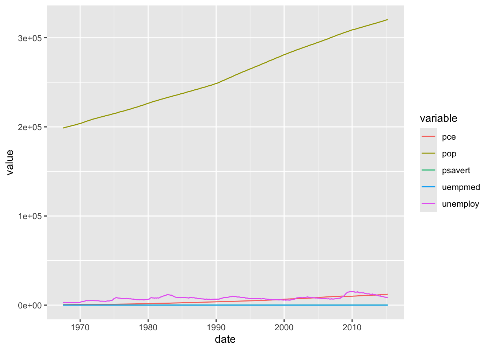
You could color the lines, but the series have different units. It is also difficult to compare because they have different y values.
p + facet_grid(variable ~ .)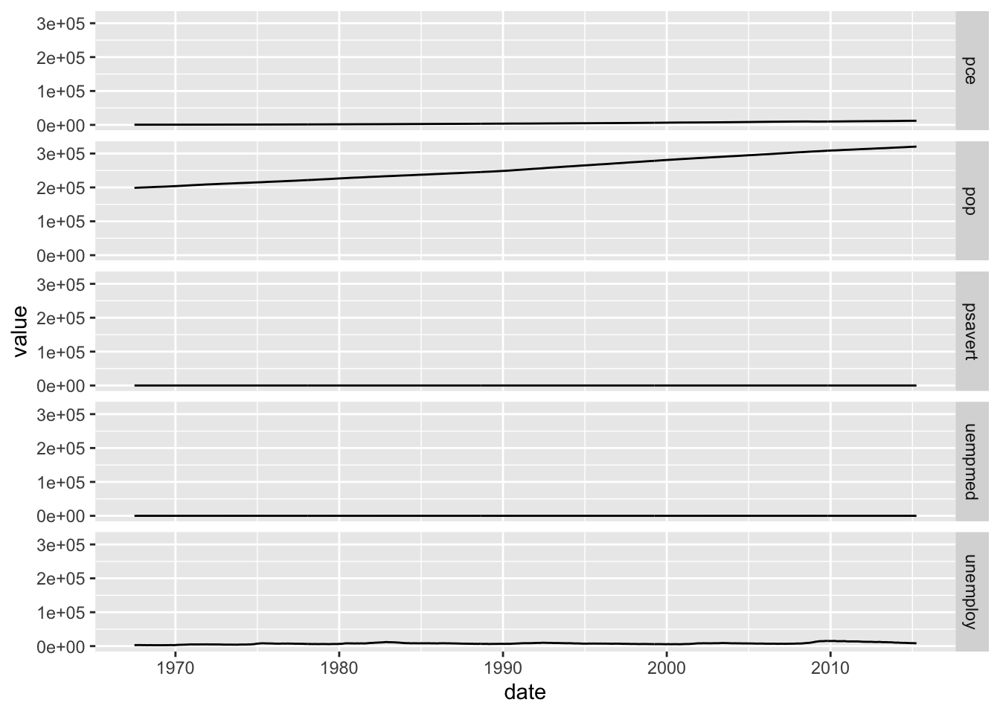
Faceting makes it better, but you still have the scale issue.
p + facet_grid(variable ~ ., scales="free_y")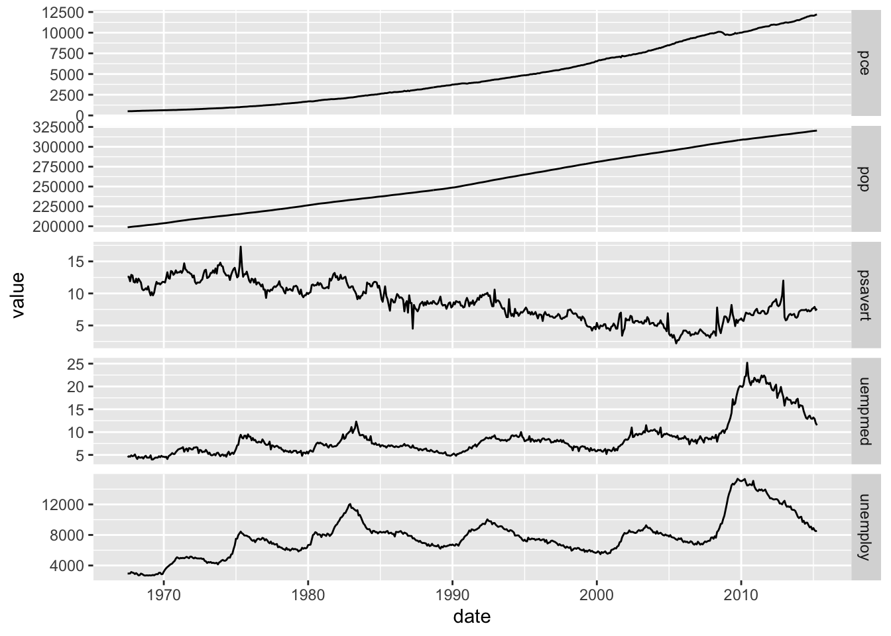
Free_y makes it even better.
Checkpoint
facet_grid() has an additional parameter space that is very useful in conjunction with scales. Using ggplot(mpg) + aes(cty, model) + geom_point() as your base graph, set facets so that rows are indexed by manufacturer, and investigate how to use the scales and space arguments to improve the visualization.p <- ggplot(economics_long) +
aes(date, value) +
geom_line()
p + facet_grid(variable ~ ., scales="free_y", space = "free_y")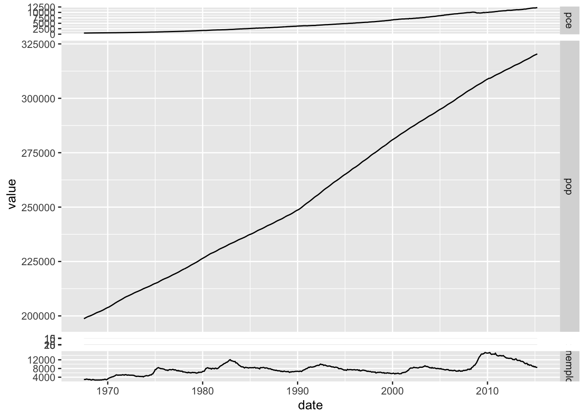
This is a problem because we cannot compare them anymore. The ones that have small ranges get condensed.
p <- ggplot(mpg) + aes(cty, model) + geom_point()
p + facet_grid(manufacturer ~ .)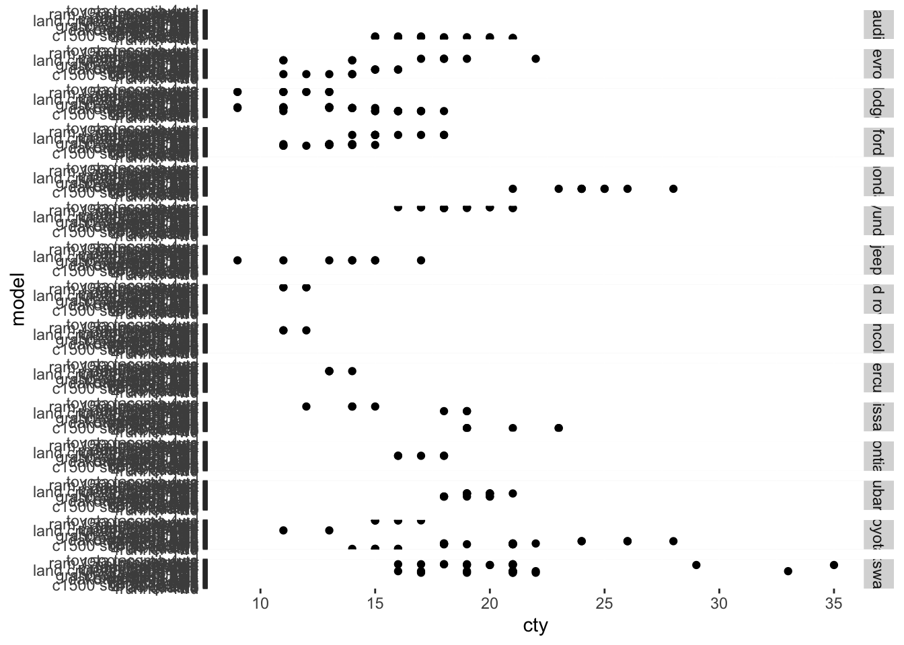
This is a mess. It is putting all the models in there.
p + facet_grid(manufacturer ~ ., scales = "free_y")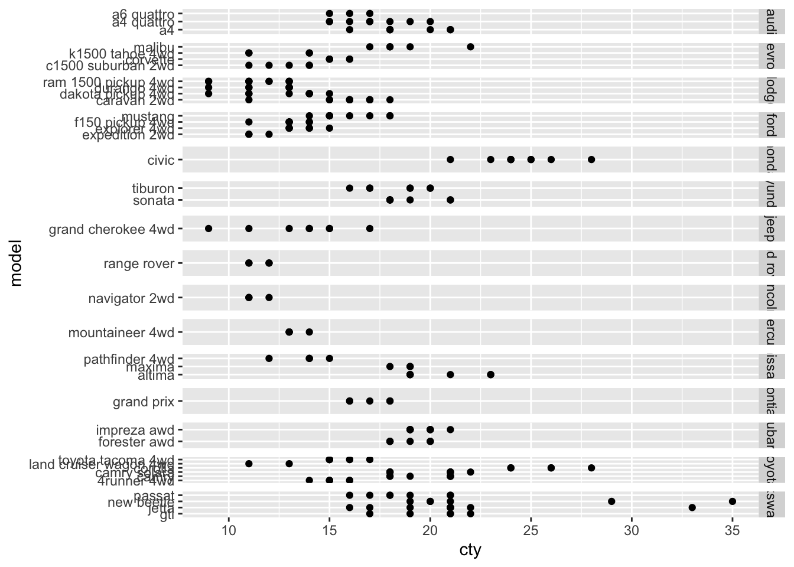
We only have the relevant data now, but we have a problem with a spacing.
p + facet_grid(manufacturer ~ ., scales = "free_y", space = "free_y")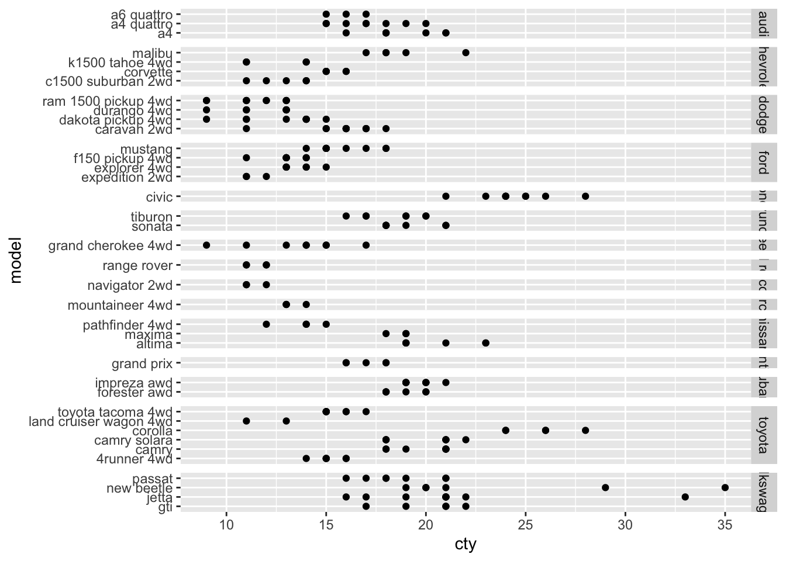
If “free_y” their height will be proportional to the length of the y scale.
If “free_x”, their width with be proportional to the length of the of the x scale.
It only makes sense to free the axis with which you are faceting.
Unlike aesthetics, faceting is always set globally and cannot be specified per geometry. What happens then if we specify multiple datasets in multiple geometries and faceting variables are missing in some of them? Let’s find out:
df1 <- data.frame(x = 1:3, y = 1:3, gender = c("f", "f", "m"))
df2 <- data.frame(x = 2.5, y = 2.5)
df1 x y gender
1 1 1 f
2 2 2 f
3 3 3 mdf2 x y
1 2.5 2.5ggplot(df1) +
aes(x, y) +
geom_point(data = df2, color = "red") +
geom_point() +
facet_wrap(~ gender)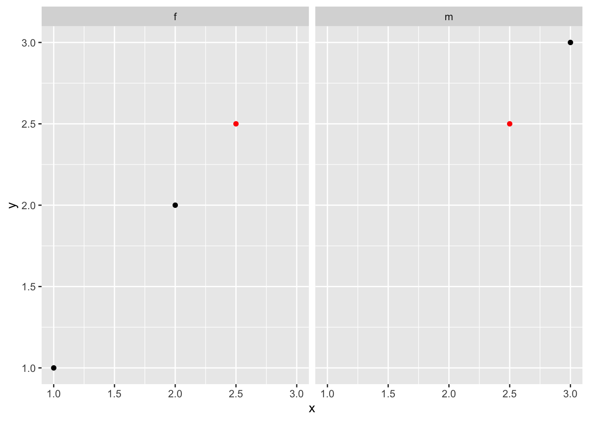
As can be seen, the red dot, corresponding to the dataset without the gender variable, appears in all facets.
Checkpoint
hwy vs. displ, faceted by class) as your base plot. Add another geom_point() layer with a new dataset, in the appropriate place, so that all the points appear in all the facets but dimmed in the background.p <- ggplot(mpg, aes(displ, hwy)) + geom_point()
p + facet_grid(cyl ~ .)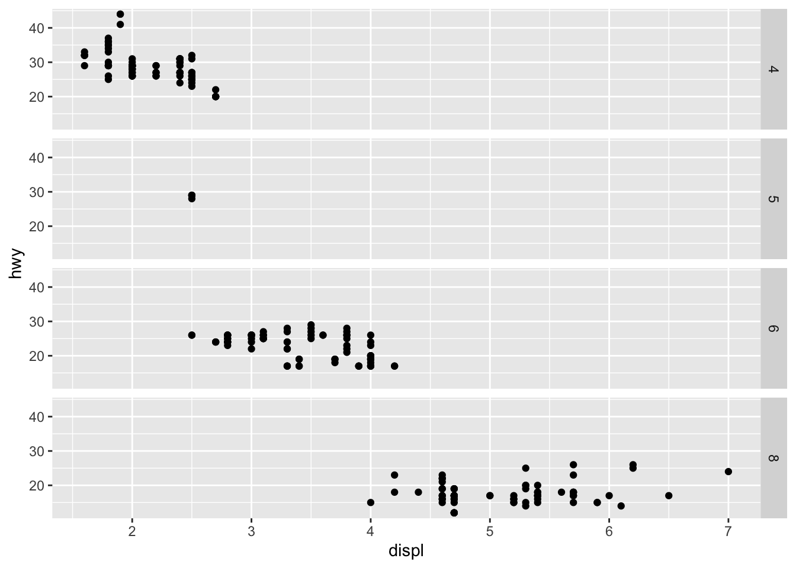
mpg2 <- mpg # creating a new variable for mpg
mpg2$cyl <- NULL # removing column cyl from mpg2
p + facet_grid(cyl~.) +
geom_point(data=mpg2, color="lightgray") +
geom_point()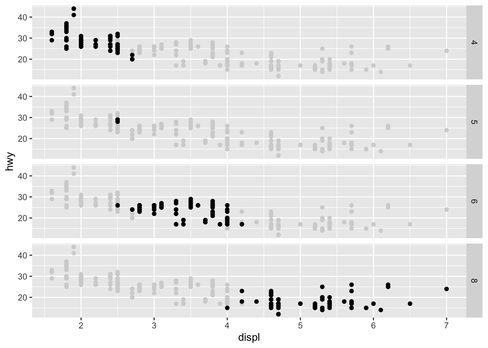
geom_smooth() curve to all facets based on the whole dataset?ggplot(mpg) +
aes(displ, hwy) +
facet_grid(cyl~.) +
geom_point(data=mpg2, color="lightgray") +
geom_point() +
geom_smooth(data=mpg2)`geom_smooth()` using method = 'loess' and formula = 'y ~ x'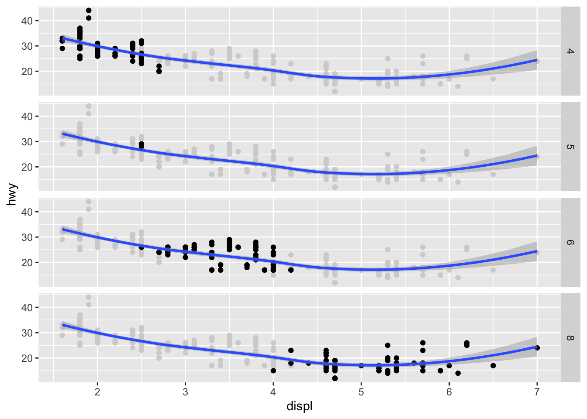